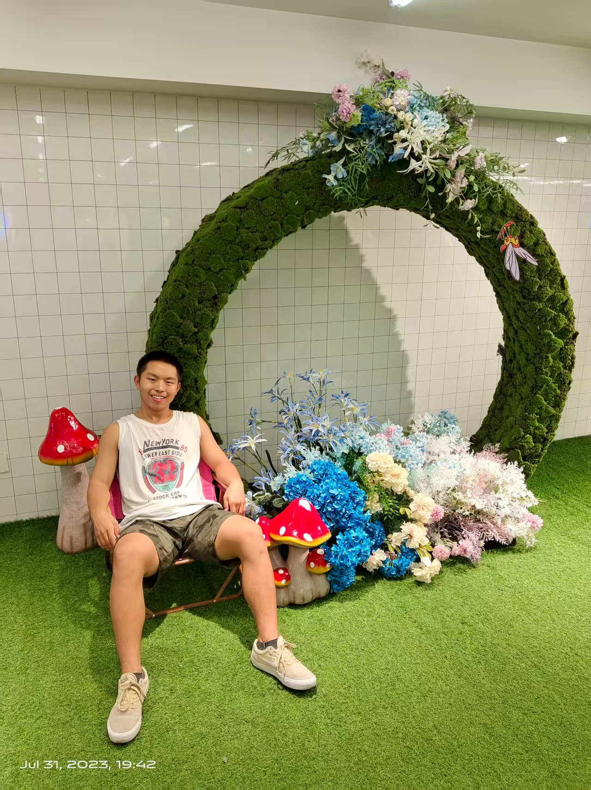

Ai Jiangtao
艾蒋涛
📍 Wuhan · Changsha
Address
South Fifth Building, Huazhong University of Science and Technology, 1037 Luoyu Road, Hongshan District, Wuhan, Hubei Province
Educational Background
-
Master: Huazhong University of Science and Technology, Cyberspace Security (Research Focus: System Security)
-
Undergraduate: Hubei University of Economics, Internet of Things Engineering
Experience
-
Research Assistant | Huazhong University of Science and Technology
Sept 2022 - Present | Wuhan, China
Engaged in research on system security and AI-based vulnerability detection, participating in 2 provincial-level research projects. Developed a prototype tool for identifying security flaws in IoT devices.
-
Software Development Intern | Huawei Technologies Co., Ltd.
July 2021 - Sept 2021 | Changsha, China
Participated in the development of network security monitoring systems, responsible for module testing and performance optimization, which improved system response speed by 15%.
Research Interests
Focus on interdisciplinary integration of algorithms and computer science, with emphasis on applying artificial intelligence in scientific fields. Key interests include signal processing and digital communication.
Honors and Awards
- 2023, National Scholarship (Top 1% of graduate students)
- 2022, Wuhan Municipal Government Scholarship
- Title of Excellent Graduate
- First Prize in the Provincial Level of Blue Bridge Cup Single-Chip Microcomputer Competition
- Second Prize in the Provincial Level of Computer Design Competition
- First Prize in Hubei Province of Huawei ICT Competition
English Proficiency
- Passed CET-4 and CET-6 with proficient application ability
- IELTS: 7.0 (Listening: 7.5, Reading: 7.0, Writing: 6.5, Speaking: 6.5)
Supervisor
Currently supervised by Professor Jiang Tao
Note
Manuscripts in preparation for submission to top-tier conferences on cybersecurity.